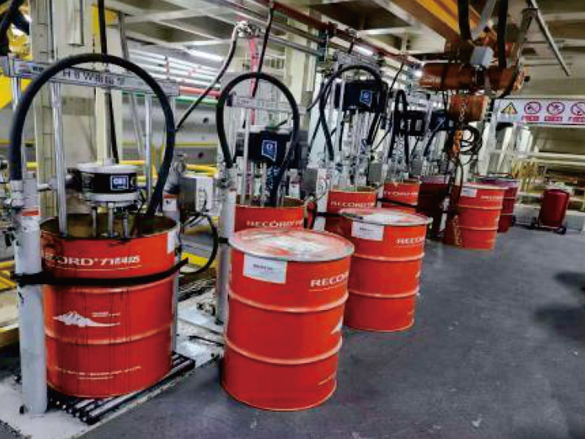

Un sellante de cola de grado de conducción económico formulado para TBMs escudo. CTR-TSG-P se bombea directamente hacia la cámara de sellado de cola a través del sistema de distribución automatizado de la máquina, estableciendo una barrera continua que previene el ingreso de agua subterránea, partículas de suelo y lechada de anillo o mortero hacia el invert del TBM.
La formulación mantiene la integridad del sello a presiones de agua sostenidas de hasta 35 bar y proporciona fuerte adhesión tanto a superficies de acero del escudo como a segmentos de revestimiento de hormigón prefabricado. Su estructura de pasta fibrosa ofrece excelentes características anti-lavado, evitando el desplazamiento del producto durante el contacto con la escobilla de cola. Autoextinguible y retardante de llama — no clasificado como peligroso según EU CLP.
| Propiedad | Valor | Método / Notas |
|---|---|---|
| Apariencia | Pasta fibrosa blanca/beige | Visual |
| Densidad | 1,35±0,05 g/cm³ | 20°C |
| Penetración | 220±20 (0,1mm) | 25°C |
| Punto de Inflamación | ≥220°C | — |
| Resist. Spray de Agua | <5% pérd. de peso | 38°C, 40 psi, 5 min |
| Rend. Sellado de Agua | Sin fugas a 35 bar | 25°C |
| Tiempo de Adhesión | ≥100 s | — |
| Maleabilidad | ≥87% | — |
| Bombeabilidad | 45–75 g/min | — |
| Lavado Vertical | ≤40 mm | — |
| Consumo Promedio | 0,8–1,0 kg/m² | Aplicación típica |
| Flamabilidad | Autoextinguible; retardante de llama | — |
| Solub. en Agua | Insoluble en agua | — |
| Clasificación Peligro | No clasificado como peligroso (EU CLP) | EU CLP |
| Regulación Transporte | No regulado | — |
Grasa de bomba espesada con arcilla para sistemas de sello de labio del rodamiento principal de TBM. Biodegradable y autoextinguible.
Ver Detalles →Sellante de primera carga para escobillas de sellado de cola, aplicado manualmente. Complementario a las grasas para sello de cola tipo bomba.
Ver Detalles →Sellante ecológico distribuido por bomba para sistemas de sello de labio del rodamiento principal. Biodegradable y no tóxico.
Ver Detalles →Nuestro equipo revisará las especificaciones de su TBM y las condiciones del suelo para confirmar la idoneidad del producto y proporcionar los parámetros de aplicación.